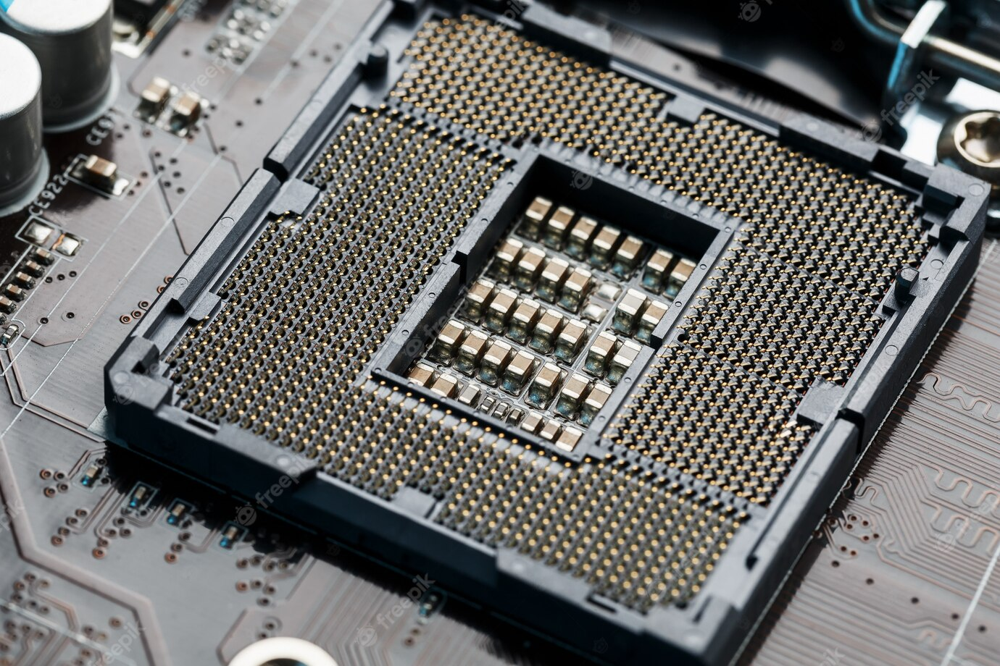

CPU's are essentially the brains of the computer as this has the power to process inputs store data and output the data. CPU also have their own speeds that are called "clock speed." Unlike the other components CPUs are messured in GHz. The 2 different types of CPU that you can get are which will determine the whole build as the two brands are not compatible. These are Intel and AMD. CPUs can both come in 32bit and 64bit, but most commonly 64bit with updated software over the years. The most important thing to look at with the CPU is to make sure that you get the right socket as the motherboard. We will now look into each brand sockets; Intel calls their sockets LGA.
First by moving the lever on the cpu socket that is located at the top of the motherboard and illustrated by the picture. Once the lever has been removed the socket will open, this will look different if it is an intel or an AMD motherboard. CPUs will have a little notch in the side of them so that they will only fit one way in but you must be extremely careful when fitting the cpu into the socket as it is very easy to bend the pins and when it has been seated correctly you drop the socket and pull the lever down and seat it into the lock.
